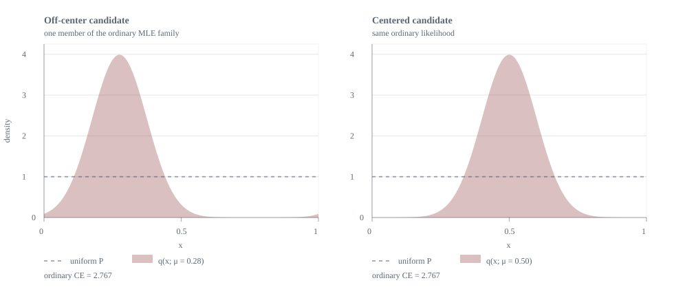
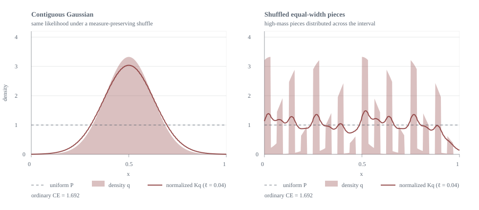
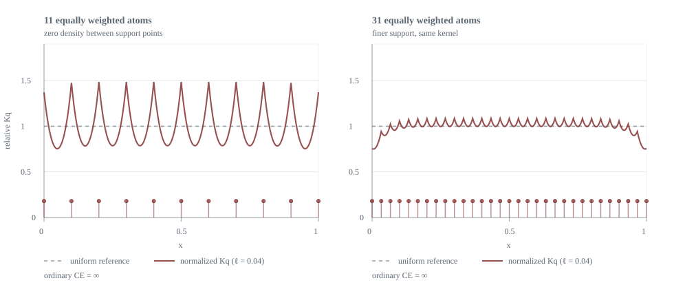
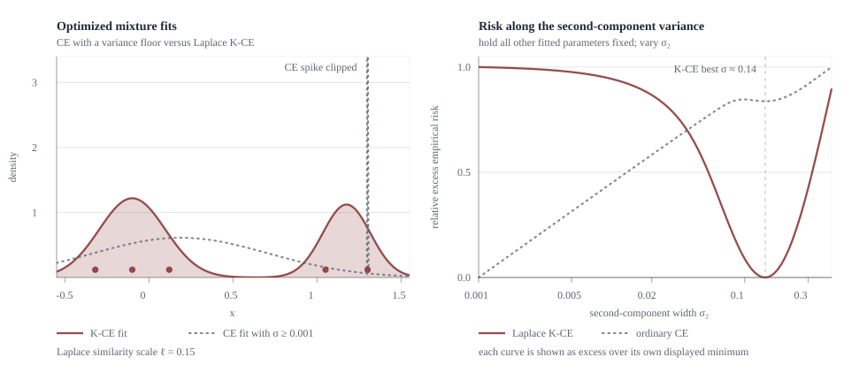

Examples
Weather forecast
Suppose the outcome we want to predict is rain, cloudy, or sunny. If the consumer of the forecast treats confusing rain with cloudy as a smaller mistake than confusing either with sunny, we can encode that with a similarity kernel such as
Then probability assigned to cloudy should count as partial credit when rain occurs (and vice versa), while probability assigned to sunny should not. Ordinary log loss cannot express that distinction because it only cares about the probability assigned to the exact observed state.
For example, take the truth to be $p=(0.8,0.1,0.1)$ over rain, cloudy, and sunny, and compare $q_{\mathrm{near}}=(0.6,0.3,0.1)$ with $q_{\mathrm{far}}=(0.6,0.1,0.3)$. Ordinary cross-entropy gives them the same risk/reward because the reports assign the same probability to rain and only swap the equal-mass cloudy and sunny terms. But rain-or-cloudy has $90\%$ probability under the truth, so a similarity-sensitive cross-entropy should prefer the report that confuses between those two.
You may note that in practice, you can coarsen by merging rain and cloudy into a single "not sunny" category. This is true, but it throws away information that the forecaster might have, and leads to biasing the model in a way that is not transparent. We can do this more transparently (and equivalently) by setting the 0.3 similarity to 1. The next examples show that the problem of rewarding near-misses is not just a discrete issue, so coarsening by merging labels is never a complete answer.
Wrapped likelihood
Consider a simple misspecified model-fitting problem. Let the true distribution be uniform on $[0,1]$, and fit only the location $\mu$ of a fixed-variance Gaussian that is wrapped around the interval:
Here $\phi_\sigma$ is the centered Gaussian density with standard deviation $\sigma$. The sum turns it into a wrapped Gaussian density: it is the law of $\mu+\sigma Z \pmod 1$, written as a density on $[0,1]$.
Because $q_\mu$ is just a circular translation of the same density, ordinary cross-entropy cannot choose between them:
is the same for every $\mu$. The centered Gaussian and an off-center Gaussian would tie under MLE (in the theoretical limit).
Now imagine that we care about the geometry of the interval: values close to each other are more similar. A reasonable task kernel for this geometry is a Gaussian kernel that uses ordinary distance:
I use this Gaussian RBF here because it is a familiar way to illustrate local similarity. It is not, however, a general-purpose propriety guarantee: the tangent score derived below is proper only when $H_K$ is concave, and Gaussian RBF kernels do not ensure that condition for every configuration.
A loss that accounts for similarity should have a way to say that these two reports are different, but a loss that looks only at the density at each observed point cannot measure this difference.

Shuffled likelihoods
A difference begins to appear when we incorporate neighborhood information via $K$ directly. For a reported probability law $q$, the typicality of $x$ is
The plot below compares normalized typicality for a Gaussian-shaped density and for a version of the same density cut into equal-width pieces and shuffled across the interval. Ordinary cross-entropy is the same for both, but the shuffled version has more uniform typicality because it spreads out the high-density pieces and the similarity kernel smooths over them. The plotted $Kq$ curves below use $\ell=0.04$ on the unit interval.

Finite atoms
Now, we approximate a continuous uniform distribution with a finite number of atoms. Ordinary log loss is annoyingly infinite for any finite-atom approximation, because the model has zero density between atoms. But the local typicality $(Kq)(x)$ is positive between atoms, so a similarity-aware loss should be able to compare these approximations rather than declare all of them infinitely bad.

The Scoring Rule
Probability versus similarity
Let $\mathcal X$ be the outcome space, let $p$ be a probability law on $\mathcal X$, and let $K:\mathcal X\times\mathcal X\to(0,1]$ be a similarity kernel. We have two separate concepts: $p$ says what the reporter believes will happen, while $K$ says how interchangeable the outcomes are.
For a law $p$, the typicality function again is
Similarity-sensitive entropy is expected surprisal of that typicality:
In finite notation, $(Kp)_i=\sum_j K_{ij}p_j$ and $H_K(p)=-\sum_i p_i\log (Kp)_i$. When $K$ is the identity kernel, this is Shannon entropy.
Log-typicality loss
The first scoring rule to try is the log-typicality loss, which is nonlocal and looks at the typicality of the observed state under the report:
This is somewhat meaningful, but it is not enough. A report can make $x$ typical by putting mass on states near $x$, without paying attention to how much probability is assigned to $x$ by itself. In that sense, log-typicality blurs identity as well as distance.
The issue shows up even with two states. Let
Truthful reporting gives $(Kp)=(0.9,0.6)$, so
But the overly confident report that puts all mass on the first state $q=(1,0)$ gives $(Kq)=(1,0.5)$ and lower risk:
The score prefers the report that assigned 0 probability to the second state but keeps typicality high through similarity to the first. So log-typicality is an improper scoring rule.
The corrected log-typicality rule
We can correct this by keeping the log-typicality term and adding a reward (negative risk) for observations that represent a large share of the similarity mass under the reporting distribution:
In the second term, for each state $Y$ drawn from the reported distribution, the ratio compares the similarity between $Y$ and the observed point $x$ to the total typicality of $Y$ under the report. If $x$ accounts for a large share of many such neighborhoods, the reward is large. This creates the desired tradeoff between rewarding reports for putting mass on the observed point and rewarding them for putting mass near the observed point.
This reward cancels out under the report itself:
So the extra term has mean zero when the data really come from $q$, while still rewarding observed points that are representative of the report as a whole, which is what log-typicality alone was missing.
In finite notation, it looks like
If $K=I$, then $(Kq)_j=q_j$ and $\sum_i q_iK_{ij}/(Kq)_i=1$, so the expression collapses to $-\log q_j$. Log loss is the identity-kernel special case.
Where the rule comes from
On kernel classes where this entropy is concave, the corrected score is the tangent loss rule generated by similarity-sensitive entropy:
More generally, any concave entropy functional $H$ generates a proper score by taking the tangent plane at the reported distribution $q$:
Concavity gives $\mathbb E_{X\sim p}S_H(q,X)\ge H(p)$, with equality at $q=p$. That ensures "properness": if I believe $p$, I should report $p$.
The concavity condition is essential, not technical decoration. One useful guaranteed family is the one-dimensional Laplace pullback class, including $K_\ell(x,y)=\exp(-|x-y|/\ell)$. For a kernel without a concavity result, including a general Gaussian RBF, the same formula defines a tangent score but it need not be proper.
Examples again
Using the tangent score, we can check the examples above to see how it behaves. The entries below are risks under the true distribution used in each example. Calling any row proper additionally requires concavity for its chosen kernel.
| Example | Report | Ordinary CE | $K$-CE |
|---|---|---|---|
| Weather forecast | Rain + sunny mass | 0.759 | 0.605 |
| Rain + cloudy mass | 0.759 | 0.566 | |
| Wrapped Gaussian | Off-center | 2.767 | 3.731 |
| Centered | 2.767 | 3.500 | |
| Shuffled pieces | Contiguous bump | 1.692 | 3.959 |
| Shuffled pieces | 1.692 | 2.461 | |
| Finite atoms | 11 atoms | $\infty$ | 2.474 |
| 31 atoms | $\infty$ | 2.345 |
Fitting models
Maximum likelihood minimizes ordinary cross-entropy:
Under misspecification this chooses the KL projection of $P$ onto the model class.
If the task kernel is known, the aligned estimator is instead
With a correctly specified model and infinite data, strictly proper scores target the same true law. Under misspecification, finite data, regularization, approximate inference, or model selection, the scoring rule changes the projection because it changes the shape of the tradeoff for being wrong.
Fitting a mixture model
Another important case where this matters is in fitting a Gaussian mixture to two small clusters of data. Ordinary MLE can get infinite reward placing a mixture component on one point and using the other component more broadly, requiring arbitrary minimum variance decisions to keep things finite, or priors, cross-validation, and other forms of regularization to select among fits. From the perspective presented above, the problem is that we use an implicit identity kernel that rewards precision far beyond what is appropriate for the task.
In the figure below, I optimize the component means, variances, and mixture weight under ordinary CE with a small variance minimum, and under the tangent $K$-CE objective with a Gaussian RBF using similarity scale $\ell=0.15$. The CE fit prefers that minimum variance component as a spike on one observation; the $K$-CE optimum is interior and instead fits two natural groups. This is an illustration of the similarity-aware objective, not a claim that Gaussian RBF $K$-CE is globally proper.

To show how favored this degenerate fit is by MLE, you can click the plot to add an observation and refit. The sample button draws the corresponding number of samples from a synthetic distribution with the selected number of components. The -infinite loss in ordinary CE leads to fits strongly favoring individual points; Gaussian-RBF $K$-CE keeps a finite objective and encourages more balanced allocation here. When it does optimize at a degenerate fit, the risk is still interpretable and finite.
The comparison below shows how much empirical risk is reduced by moving from the best $k-1$ component fit to the best $k$ component fit.
Information gain is risk reduction
Returning to experiment design. Suppose the future quantity we care about is $Y$. Before performing experiment $a$, the predictive law is $p_Y$. After observing data $Z$ from that experiment, the predictive law becomes $p_{Y\mid Z,a}$.
Suppose $H_K$ is concave, future reports will be evaluated by the resulting proper $K$-score, and the model is calibrated. Then the value of action $a$ is
This is the expected reduction in future proper $K$-cross-entropy risk. Before seeing $Z$, the best report is $p_Y$ and the risk is $H_K(p_Y)$. After seeing $Z$, the best report is $p_{Y\mid Z,a}$, and the expected risk is the second term.
This is the exact same interpretation as ordinary predictive MI, except allowing for a flexible and transparent evaluation geometry.
Takeaway
Shannon entropy generates the logarithmic scoring rule, which gives ordinary cross-entropy, KL divergence, mutual information, and maximum likelihood. When similarity-sensitive entropy is concave, it gives the parallel quantities: a similarity-sensitive scoring rule, $K$-cross-entropy, $K$-divergence, $K$-information gain, and corresponding model fitting.
With the identity kernel, the similarity-sensitive version becomes local and recovers the above Shannon/log-loss family. With an explicit similarity kernel designed for the task, we fit models and evaluate experiments to reduce the mistakes that matter for the task, rather than treating every imperfect prediction as equally wrong and infinitely precise ones as infinitely right.